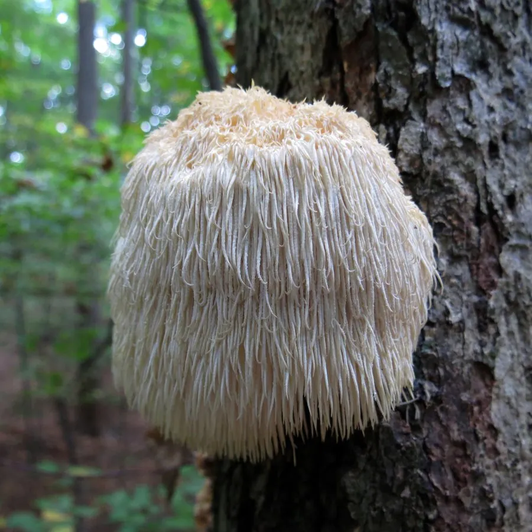

真菌 · 真菌界
猴头菇 Hericium erinaceus

猴头菇的子实体布满下垂的白色菌刺，形似猴子的脑袋，是传统的名贵食用菌，常被用于养胃护胃的食疗。
- 分类
- 门担子菌门纲伞菌纲目红菇目科猴头菌科属猴头菌属
- 栖息环境
- 阔叶树枯倒木的伤口与断枝处，喜凉爽湿润、散射光
- 地理分布
- 中国东北、华北、西南及日本、北美等地，现多人工栽培
- 保护级别
- 暂无评估（栽培食用菌）
物种志
猴头菇是担子菌门红菇目的木腐真菌，子实体肉质，呈球形或卵圆形，直径 5–20 cm，白色至淡黄色，表面密生下垂的肉质菌刺，长 1–3 cm，整体形似猴子的脑袋，故名猴头菇。菌肉白色、肥厚，菌刺表面着生子实层，担孢子近球形，孢子印白色。成熟的子实体会逐渐变黄、变硬。
猴头菇野生于栎、胡桃等阔叶树的枯倒木上，多生于树干的伤口或断枝处，分布于中国东北、华北、西南等地。它原为野生名贵食用菌，如今已实现人工栽培，常用木屑、棉籽壳菌袋培养。猴头菇肉质鲜嫩，味道清甜，可炒食、炖汤；传统医学认为它有养胃健脾之效，现代研究关注其中的猴头菇多糖和猴头菌素对胃黏膜的保护作用。
形态与习性
- 子实体球形或卵圆形，直径 5–20 cm
- 菌刺白色下垂，长 1–3 cm
- 孢子印白色
- 栽培木屑、棉籽壳菌袋栽培
- 采收期菌刺长至 1 cm 左右时
- 主要成分猴头菇多糖与猴头菌素
- 习性木腐真菌，生于阔叶树枯木
趣味知识
- 猴头菇浑身长满下垂的菌刺，翻过来看确实很像猴子的脑袋。
- 野生猴头菇常成对生长在树干的两侧，被称为“对口菇”。
- 猴头菇因养胃功效常被做成保健品，但食疗不能代替药物。